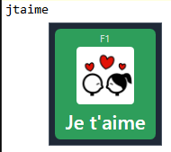
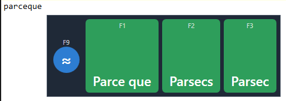
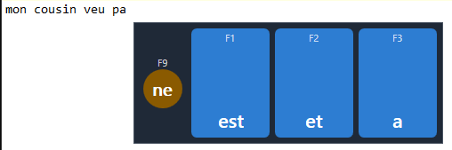
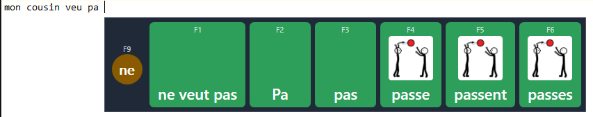
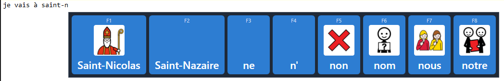
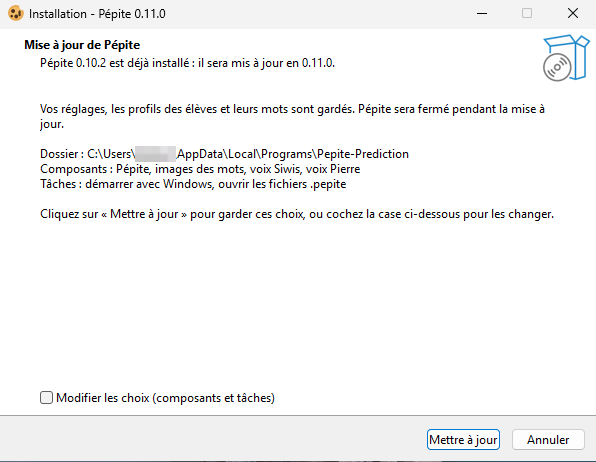

Les petites améliorations de la 0.11.0
À côté des grandes nouveautés, Pépite 0.11.0 apporte une série d'améliorations plus discrètes, mais utiles tous les jours en classe. Chacune en quelques lignes, avec un exemple.
Page publiée le . Pépite 0.11.0 est une version de test (bêta) : dites-nous ce qui ne va pas.
Encore plus de mots collés
Beaucoup d'élèves écrivent comme ils entendent, sans couper les mots. Pépite les retrouve, en vert : jtaime
→ je t'aime, ilya
→ il y a, et cé
→ c'est. Aussi des expressions : parceque
(parce que), parcontre
, quelquechose
, toutdesuite
, keske
(qu'est-ce que), silteplai
(s'il te plaît)…

Pictogramme : Sergio Palao, ARASAAC, Gouvernement d'Aragon, CC BY-NC-SA 4.0
Quand l'élève finit un mot collé, le rond devient ≈ ; F9 remplace le mot par les mots séparés, avec leurs espaces. Un mot qui existe vraiment n'est jamais coupé : entrain
ou parce
restent comme l'élève les a écrits.

Le rond ≈ est expliqué dans l'aide : ≈ bleu : s'écrit peut-être autrement.
Le « ne » oublié
À l'oral, on dit il veut pas
; à l'écrit, il faut il ne veut pas
. Quand une phrase a pas
, jamais
, rien
, personne
ou plus
sans ne
, le rond devient ne, sur fond ambre.

Un clic sur le rond, ou F9 : Pépite propose le groupe de mots corrigé. L'élève le choisit, et ses mots sont remplacés : mon cousin veu pa
devient mon cousin ne veut pas
. Pépite corrige aussi les mots mal écrits du groupe.

Pictogrammes : Sergio Palao, ARASAAC, Gouvernement d'Aragon, CC BY-NC-SA 4.0
Aussi c'est pas
→ ce n'est pas
, on a jamais
→ on n'a jamais
. Pas de rond dans il fait un pas
ou il est plus grand
. Le rond peut se tromper (j'ai pas mal de devoirs
) : relire la phrase avec l'élève reste utile. Dans l'aide : ne ambre : il manque peut-être ne.
Les noms avec un trait d'union
L'élève tape saint-n
: la barre propose Saint-Nicolas en premier. Il le choisit, et saint-n
devient Saint-Nicolas
, avec la majuscule. Aussi Jean-B
(Jean-Baptiste), Saint-P
(Saint-Pierre-et-Miquelon). Un dessin de saint Nicolas accompagne le nom : c'est un dessin original de Pépite, libre (CC0 1.0).

Dessin de saint Nicolas : Pépite, CC0 1.0. Autres pictogrammes : Sergio Palao, ARASAAC, Gouvernement d'Aragon, CC BY-NC-SA 4.0
Les mots avec un trait d'union restent proposés comme avant : dis-m
propose toujours moi. Dans LibreOffice Calc et Impress, où Pépite ne peut pas lire le texte, il écrit seulement la fin du mot (saint-Nicolas
) : la majuscule est à corriger à la main.
Des mots jamais proposés
Pépite ne propose jamais certains mots blessants ou grossiers. Un élève qui en tape un l'écrit normalement : Pépite ne l'empêche pas, il ne le suggère pas.
L'enseignant peut ajouter ses propres mots : dans l'Espace enseignant, onglet Mots, profil « Classe », la liste « Mots à ne jamais proposer ». Ces mots valent pour tous les élèves du poste ; un élève ne voit pas la liste et ne peut pas la changer. Une école peut aussi en ajouter par son fichier de configuration. Dans l'aide : Listes de mots et leçons.
Une mise à jour plus simple
L'installation de la nouvelle version reconnaît Pépite déjà installé : Pépite 0.10.2 est déjà installé : il sera mis à jour en 0.11.0
. Elle rappelle les choix actuels, et deux clics suffisent : Mettre à jour, puis Terminer. Les réglages, les profils des élèves et leurs mots sont gardés ; au premier démarrage, Pépite en fait aussi une copie dans le dossier des sauvegardes.

Sur un écran agrandi (150 %, 200 %), les cases à cocher de l'installation ne sont plus coupées à moitié. Dans l'aide : Mettre à jour.
Corrections
- LibreOffice, la fenêtre du mot de passe : Pépite ne montre plus, et ne lit plus, ce qui est tapé dans la fenêtre
Saisir le mot de passe
. Jusqu'à la version 0.10.2, les lettres pouvaient apparaître dans la barre, et dans le journal de diagnostic quand il était activé. Voir aussi Pépite dans LibreOffice Writer. - Word, Ctrl+A sur un long document : la barre de lecture lit de nouveau la sélection.
- Une fenêtre qui s'ouvre par-dessus le texte : Pépite lit bien le texte de la fenêtre qui est devant, et la relecture d'un mot corrigé n'est plus perdue.
- La dernière page de l'installation ne parle plus d'une icône sur le Bureau quand il n'y en a pas :
Pépite se trouve dans le menu Démarrer
.